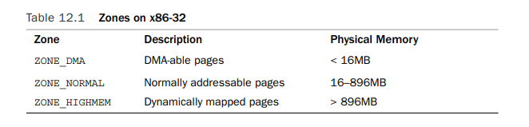
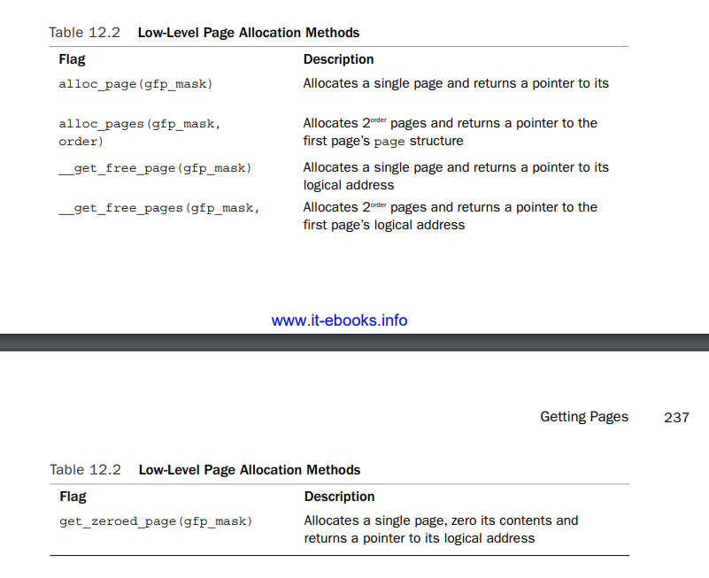
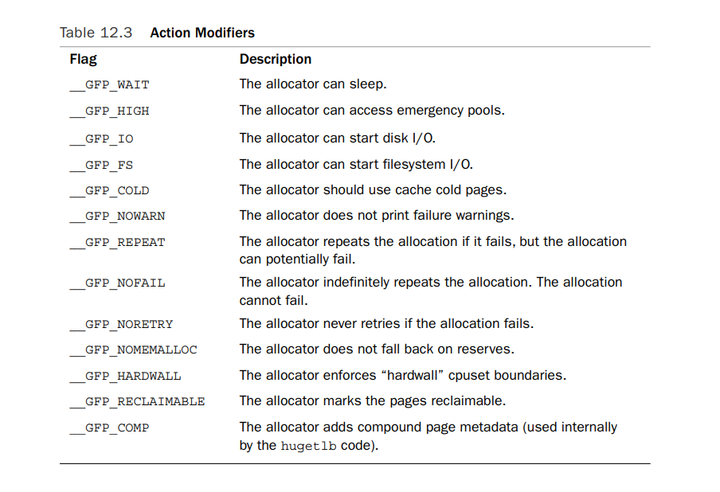
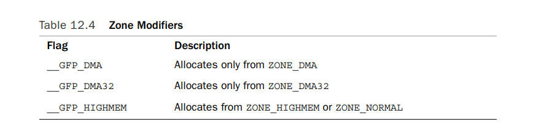
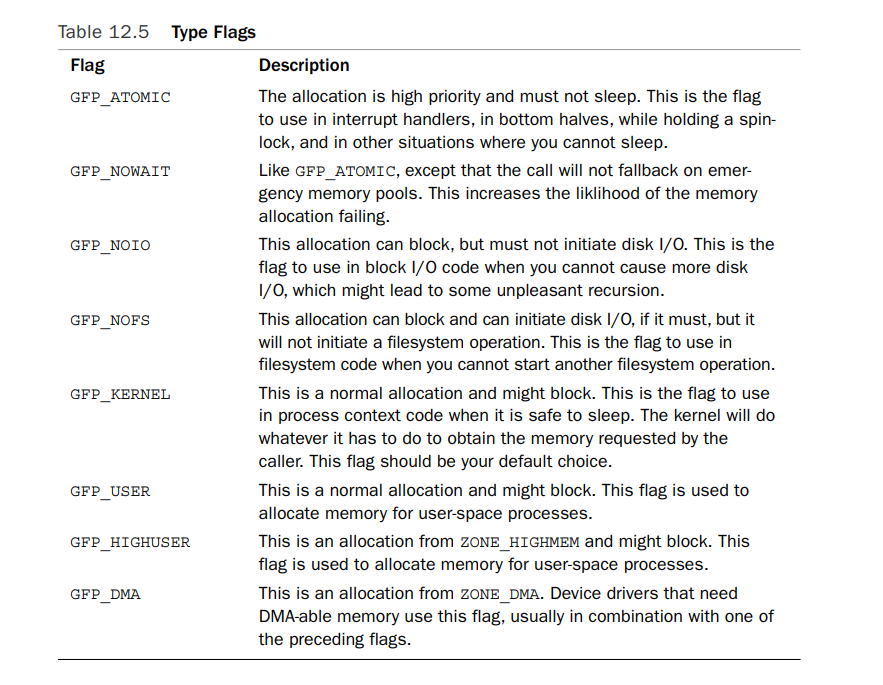
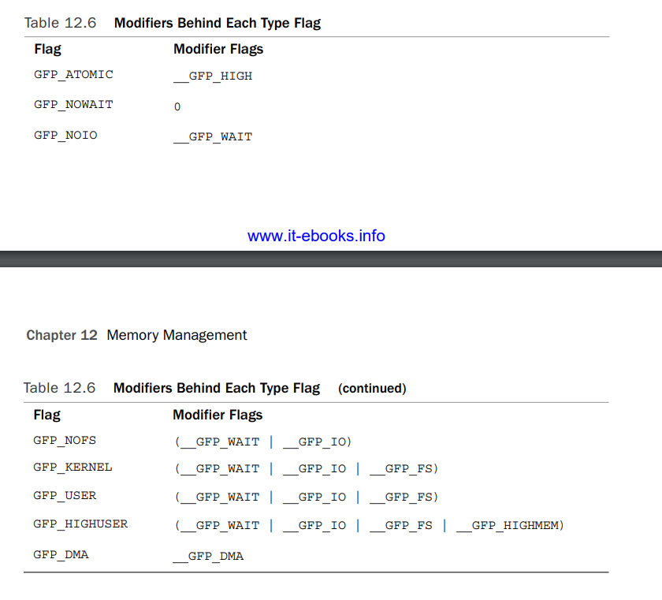
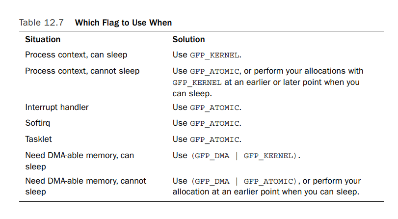
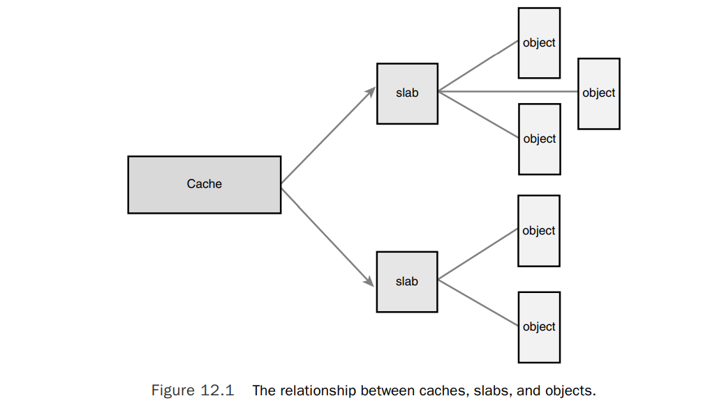

Pages
内存管理以页为单位。尽管最小的可寻址单元是byte or word,MMU通常是跟页打交道，通过页表将虚拟地址转换为物理地址。就虚拟内存而言，页是管理虚拟内存的最小单元。 页大小是architecture defines.有些architecture甚至可以支持多个不同的页大小。通常32位架构的页大小是4KB，64位是8KB.如果某个机子页大小4KB,物理内存1GB,则物理内存被分成262144页 内核中页定义为struct page结构体，在文件linux/mm_types.h中。以下是简化的定义
struct page {
unsigned long flags; /*stores the state of page*/
atomic_t _count;
atomic_t _mapcount;
unsigned long private;
struct address_space *mapping;
pgoff_t index;
struct list_head lru;
void *virtual;
}
flags字段表示该页的状态。比如该页是否dirty,是否locked in memory. 其状态位定义在
需要注意的是，这个struct page关联的是物理页。内核使用这个结构体track all the pages in the system,以此来知道每个页面的状态，比如是否free,如果该页不是free的，那么需要知道该页被谁占用了。可能的使用对象有，user-space processes,dynamically allocated kernel data,static kernel code, the page cache,等等。
每个物理页都会创建该结构体的一个实例。假设struct page需要消耗40 bytes of memory。 假如系统的页大小是8KB,内存是4GB，那么一共有524,288物理页，所有页的该结构体一共消耗20MB内存
Zones
由于硬件的限制，并不是所有物理页的访问都是完全等同的。对于某些物理地址的物理页，是不能被用于执行某些任务的。也就是说，页的属性是不同的。内核使用zone这个概念group pages of similar properties.比如有些硬件设备只能对特定一段物理内存使用DMA(direct memory access),还比如在有些架构上，内核虚拟地址的大小小于物理地址，因此部分物理地址并不能一一映射到内核地址空间中，典型的x86_32架构。 内核主要提供了一下几个zone
- ZONE_DMA:这个zone包含的页可以供部分硬件设备执行DMA访问
- ZONE_DMA32: 同ZONE_DMA一样，也是用于DMA访问的，但是only accessible by 32-bit devices.
- ZONE_NORMAL:直接映射到内核地址空间的页
- ZONE_HIGHMEM: 这个zone中的页没有直接映射到内核地址空间中，需要动态映射。
各个memroy zone在物理内存中的分配是architecture-dependent.比如有些架构下，DMA可以访问任何内存，所以ZONE_DMA就是空的，直接使用ZONE_NORMAL的内存就可以了。而比如x86架构，ISA 设备只能DMA访问前16MB的物理内存，因此ZONE_DMA在x86上的内存范围是0-16MB. ZONE_HIGHMEM也一样，在32bit的x86架构上，ZONE_HIGHMEM是896MB以上的所有内存。而对于64bit的x86而言，所有的内存都是可以直接映射到内核地址空间的，ZONE_HIGHMEM是空的。
通常ZONE_HIGHMEM中的内存又叫high memory,而剩下的内存叫做low memory.
ZONE_NORMAL的内存通常就是除前两者之外剩下的物理内存。x86_32架构上，ZONE_NORMAL是16MB-896MB,而有些架构上，ZONE_NORMAL是所有的物理内存(ZONE_DMA和ZONE_HIGHMEM都是空的)
下表是x86-32架构上每个zone的内存分配

尽管有时候我们需要从特定的zone中分配内存页，但是也有些分配可以从多个zone中获取。比如分配DMA-able memory只能从ZONE_DMA中获取，但是normal allocation确既可以从ZONE_DMA中，也可以从ZONE_NORMAL中获取。但是page不能cross zone boundaries.内核在分配的时候还是优先选择最符合的zone分配。比如分配normal page时，还是优先从ZONE_NORMAL中分配，这样为ZONE_DMA节省空间给需要ZONE_DMA的分配。当然如果ZONE_NORMAL空间不足了，就只能从ZONE_DMA中分配了Getting Pages
linux kernel提供以下接口用于在内核中分配和释放page,这些接口定义在
struct page * alloc_pages(gfp_t gfp_mask, unsigned int order)
这分配 1<<order 的连续的物理页面，返回第一个页面的struct page的指针。出错返回NULL。注意这里只返回struct page的指针，不返回其映射到的虚拟地址。所以不要求页面是直接映射的。
以下函数可以获取分配的page对应的virtual address，如果没有映射到虚拟空间，则返回NULL
void * page_address(struct page *page)
如果需要返回其虚拟地址，也就是需要获取的页面是直接映射到虚拟空间的，而不需要后续再map到虚拟空间，则可以直接调用以下函数
unsigned long __get_free_pages(gfp_t gfp_mask, unsigned int order)
该函数分配的物理页面是连续的，对应的虚拟地址也是直接映射，因此也是连续的。返回的是第一页面映射的虚拟地址
如果只需要分配一个页面，如下
struct page * alloc_page(gfp_t gfp_mask)
unsigned long __get_free_page(gfp_t gfp_mask)
如果需要返回的页面filled with zero
unsigned long get_zeroed_page(unsigned int gfp_mask)

Freeing Pages
void __free_pages(struct page *page, unsigned int order)
void free_pages(unsigned long addr, unsigned int order)
void free_page(unsigned long addr)
kmalloc()
The kmalloc() function is a simple interface for obtaining kernel memory in byte-sized chunks,declared in
void * kmalloc(size_t size, gfp_t flags)
返回的地址是虚拟地址，物理空间是连续的，至少size大小。出错返回NULL
释放
void kfree(const void *ptr)
vmalloc()
vmalloc()函数分配的地址不一定是物理连续的，只是虚拟连续的。它会分配物理上不连续的空间，fixing up the page table
The vmalloc() function is declared in
void * vmalloc(unsigned long size)
同时这个函数可能会睡眠，因此只能用于process context,不能用于interrupt context或者其他不能睡眠的上下文中，比如持有spinlock 释放
void vfree(const void *addr)
这个函数也可能睡眠
gfp_t flags
gfp_t 这个类型定义在 linux/types.h文件中，是unsigned int的typedef. flags被分为3类，action modifiers, zone modifiers, and types action modifiers 的flag标志内核该如何分配内存，比如在分配时是否可睡眠 zone modifiers 标志表示从哪个zone中分配 type 是以上两种的组合，可以只使用一个type表示，来代替 action modifier | zone modifier，简化flag的使用。 比如GFP_KERNEL,就经常用于code in process context inside the kernel
- Action Modifiers

for example
allocation can block, perform I/O, and perform filesystem operations, if needed.ptr = kmalloc(size, __GFP_WAIT | __GFP_IO | __GFP_FS); - Zone Modifiers

内核在分配内存时，优先使用ZONE_NORMAL,因此如果这些zone的标志都没有设置，内核会默认先试图从ZONE_NORMAL中分配内存。 如果ZONE_NOAMAL中内存不够，会试图从ZONG_DMA中分配内存。默认情况下分配的内存都是直接映射的。 GFP_DMA和GFP_DMA32,这两个标志使内核只能从ZONE_DMA或者ZONE_DMA32中分配内存。 GFP_HIGHMEM 标志表示希望优先从ZONE_HIGHMEM中分配内存，不过ZONE_NORMAL也可以。 不过需要注意的是，GFP_HIGHMEM标志不能用于 __get_free_pages()和kmalloc()函数中，因为其直接返回虚拟地址，而zone_highmem中的页面没有映射到虚拟地址 - Type Flags


大部分在内核中分配内存都会使用GFP_KERNEL.该分配可睡眠，没有io限制，很大可能会成功。 如果是GFP_ATOMIC标志，不能睡眠，不能做io操作，只能从空闲内存中分配，如果内存不足会失败。使用于不可睡眠场景下的内存分配。 GFP_NOIO,GFP_NOFS有io限制，适用于特定场景下的内存分配，比如block io或者文件系统i/o下的内存分配，避免出现deadlock. The GFP_DMA flag is used to specify that the allocator must satisfy the request from ZONE_DMA.This flag is used by device drivers, which need DMA-able memory for their devices. Normally, you combine this flag with the GFP_ATOMIC or GFP_KERNEL flag

Slab Layer
slab layer专门用于小内存的分配，频繁创建和释放的各种object,比如task_struct结构体，inode结构体。 slab layer可以创建各种该类结构体的cache,释放的结构体直接放到该cache中供下次分配。 kmalloc()接口使用general purpose caches.
cache由多个slab组成。一个slab通常由一个或多个连续的物理页组成。从slab中分配object。slab有3中状态，full,partial,empty.full slab没有free object.empty slab都是free object,partial slab部分object被分配了。当需要分配对象时，优先从partial slab中分配，再次从empty中分配，如果没有empty slab,需要分配新的empty slab.

每个cache都包含3个slab链表，分别表示slabs_full,slab_partial,slab_emtpy. 每个slab结构体如下struct slab {
struct list_head list; /* full, partial, or empty list */
unsigned long colouroff; /* offset for the slab coloring */
void *s_mem; /* first object in the slab */
unsigned int inuse; /* allocated objects in the slab */
kmem_bufctl_t free; /* first free object, if any */
};
该slab结构体要么从general cache中分配，要么在每个slab的开头处分配。 当需要分配新的slab时，slab layer会调用底层的 __get_free_pages()接口获取新的页面。 分配新的slab的接口如下
static void *kmem_getpages(struct kmem_cache *cachep, gfp_t flags, int nodeid)
{
//kmem_cache就是每个cache结构体
struct page *page;
void *addr;
int i;
flags |= cachep->gfpflags;
//UMA的情况
if (likely(nodeid == -1)) {
addr = (void*)__get_free_pages(flags, cachep->gfporder);
if (!addr)
return NULL;
page = virt_to_page(addr);
} else {
page = alloc_pages_node(nodeid, flags, cachep->gfporder);
if (!page)
return NULL;
addr = page_address(page);
}
i = (1 << cachep->gfporder);
//SLAB_RECLAIM_ACCOUNT表示该slab页是可回收的。
if (cachep->flags & SLAB_RECLAIM_ACCOUNT)
atomic_add(i, &slab_reclaim_pages);
add_page_state(nr_slab, i); //nr_slab表示slab层使用了多少页
while (i––) {
SetPageSlab(page);
page++;
}
return addr;
}
- slab layer的使用
分配新的cache
struct kmem_cache * kmem_cache_create(const char *name,
size_t size,
size_t align,
unsigned long flags,
void (*ctor)(void *));
name参数是该cache的名字，size是其中存储的object对象的大小。align是offset of the first object within a slab. flags 可以是以下值or'ed,或者0
SLAB_HWCACHE_ALIGN： align each object within a slab to a cache line.prevents false sharing(two or more objects mapping to the same cache line despite existing at different addresses in memory) This improves performance but comes at a cost of increased memory footprint because the stricter alignment results in more wasted slab space. How large the increase in memory consumption is depends on the size of the objects and how they naturally align with respect to the system’s cache lines. For frequently used caches in performance-critical code, setting this option is a good idea; otherwise, think twice
SLAB_POISON—This flag causes the slab layer to fill the slab with a known value (a5a5a5a5).This is called poisoning and is useful for catching access to uninitialized memory.
SLAB_RED_ZONE—This flag causes the slab layer to insert “red zones” around the allocated memory to help detect buffer overruns.
SLAB_PANIC—This flag causes the slab layer to panic if the allocation fails.This flag is useful when the allocation must not fail, as in, say, allocating the VMA structure cache during bootup.
SLAB_CACHE_DMA—This flag instructs the slab layer to allocate each slab in DMAable memory.This is needed if the allocated object is used for DMA and must reside in ZONE_DMA. Otherwise, you do not need this and you should not set it
最后的ctor,如果设置了的话，会在new pages added to cache 后调用。一般不设置。
该函数成功返回创建好的cache,失败返回NULL。该函数可能会睡眠。
释放cache
int kmem_cache_destroy(struct kmem_cache *cachep)
该函数通常是在模块shutdown时会释放该模块自己创建的cache。可能会睡眠。在调用这个函数之前，caller需要确保以下两个条件被满足
- All slabs in the cache are emtpy
- No one accesses the cache during (and obviously after) a call to kmem_cache_destroy().
成功返回0，失败返回nonzero
从cache中分配对象
void * kmem_cache_alloc(struct kmem_cache *cachep, gfp_t flags)
如果cache中没有可用的slab了，需要分配新的slab，也就是调用我们之前看到的kmem_getpages()，flags值会传给__get_free_pages().可以根据情况设置为GFP_KERNEL或者GFP_ATOMIC.
释放对象回cache
void kmem_cache_free(struct kmem_cache *cachep, void *objp)
使用实例 我们看一下内核是如何cache task_struct的。 内核有一个tast_struct的global cache
struct kmem_cache *task_struct_cachep;
内核在初始化时，在fork_init()函数中会创建该cache
task_struct_cachep = kmem_cache_create(“task_struct”,
sizeof(struct task_struct),
ARCH_MIN_TASKALIGN,
SLAB_PANIC | SLAB_NOTRACK,
NULL);
ARCH_MIN_TASKALIGN 字节为第一个task_struct在slab中的偏移，这个值是architecture-specific,通常为L1_CACHE_BYTES，L1 cache的大小。SLAB_PANIC flag设置了，返回值不需要检查是否失败。
每次当某个进程调用fork()时，新的进程描述符会被创建，如下
struct task_struct *tsk;
tsk = kmem_cache_alloc(task_struct_cachep, GFP_KERNEL);
if (!tsk)
return NULL;
描述符需要释放返回cache时调用
kmem_cache_free(task_struct_cachep, tsk);
内核栈
每个进程的user-space stack的大小是可以动态增长的，但是内核栈是固定大小的。通常为2pages。在2.6系列中，也可以设置为1page. 这个option的添加主要有2个原因，一是为了节省空间，二是随着系统的运行，内核越来越难以找到2个连续的物理页，这样创建新进程的时间也会变长。同时由于interrupt handler也会使用被中断的进程的kernel stack，当kernel stack被设置为1page时，其空间不足以再被interrupt handler使用，因此在这种配置下，内核会单独创建per-processor interrupt handler stack，为1page.
正是由于内核栈的空间受限，也不会动态增长，在使用内核栈空间时需要小心。尤其是不能分配大空间导致overflow.当overflow发生时，最先受影响的就是栈底的therad_info structure.
High Memory Mapping
high memory中的页面无法被直接映射到kernel space,比如当我们使用alloc_pages函数，flag设置为__GFP_HIGHMEM时，返回的page可能没有virtual address.因此需要再映射到kernel space中。（设置page table entry）
Permanent Mapping kernel space中有一段Permanent Mapping的线性地址可用于映射。 我们可以调用
kmap_high(page)函数将page映射到该段线性地址中。 该函数可能会sleep,works only in process context. 当不需要该映射时，比如页面释放时，需要unmap。可用于Permanent Mapping的虚拟地址是受限的。void kunmap(struct page *page)Temporary Mapping 该map不会sleep
void *kmap_atomic(struct page *page, enum km_type type) enum km_type { KM_BOUNCE_READ, KM_SKB_SUNRPC_DATA, KM_SKB_DATA_SOFTIRQ, KM_USER0, KM_USER1, KM_BIO_SRC_IRQ, KM_BIO_DST_IRQ, KM_IRQ0, KM_IRQ1, KM_SOFTIRQ0, KM_SOFTIRQ1, KM_TYPE_NR };每个km_type都代表一个可以映射的kernel space的虚拟地址